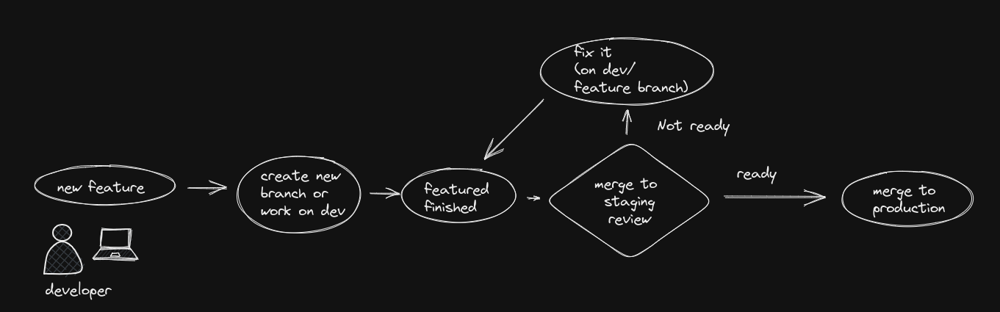

Coleo-api
Coleo-api Server
This server runs all the APIs and web apps. It also runs the github runners that are used in our deployment pipeline.
to connect via ssh ssh <your_user>@coleo-api.vhost33
APIs
Postgrest Atlas:
It is api create out of the box by the library postgRest. It provides a large set of functionalities that save us an important amount of time of development and maintainance.
The postgRest setup folder is located in the home folder of the user coleo. To access make sudo su - coleo, then cd postgrestV8.
To run postgrest you use the following command: ./postgrest atlas-config.conf
It runs as a services called postgrest_atlas.service.
use sudo systemctl status postgrest_atlas.service to status the services
use sudo systemctl start postgrest_atlas.service to start the services
use sudo systemctl stop postgrest_atlas.service to stop the services
use sudo systemctl restart postgrest_atlas.service to restart the services
How to access ?
By using a url prefix followed by the name of the table in the database and a filter query(see postgRest documentation) if needed example: https://atlas.biodiversite-quebec.ca/api/v2/
You might need to access to a custom endpoint (procedure), in that case you need to add /rpc/
For security reasons, in order control the access to our database we send a json web token (jwt) (sent asBearer token) on every request to the postgRest. The token will be prodived by the dev team.
Params can be sent as query params in a get request or in the body in case of a post request.
Examples:
request headers: the name of the schema must to be pass in the headers. In case of a post request Content-profile and for a get request Accept-profile.
request bearer:
request filter:
Post request:
Postgrest Coleo:
In this case postgRest is used to expose Coleo database. The process is exactly the same than atlas (shown before) but using a different jwt and different url.
The postgRest setup folder is located in the home folder of the user coleo. To access make sudo su - coleo, then cd postgrestV8.
To run postgrest you use the following command: ./postgrest coleo-config.conf
It runs as a services called postgrest_coleo.service.
use sudo systemctl status postgrest_coleo.service to status the services
use sudo systemctl start postgrest_coleo.service to start the services
use sudo systemctl stop postgrest_coleo.service to stop the services
use sudo systemctl restart postgrest_coleo.service to restart the services
url prefix: https://coleo.biodiversite-quebec.ca/newapi/v1/
Postgrest IO:
In this case postgRest is used to expose IO database. The process is exactly the same than atlas (shown before) but using a different jwt and different url.
The postgRest setup folder is located in the home folder of the user coleo. To access make sudo su - coleo, then cd postgrestV8.
To run postgrest you use the following command: ./postgrest io-config.conf
It runs as a services called postgrest_io.service.
use sudo systemctl status postgrest_io.service to status the services
use sudo systemctl start postgrest_io.service to start the services
use sudo systemctl stop postgrest_io.service to stop the services
use sudo systemctl restart postgrest_io.service to restart the services
url prefix: https://io.biodiversite-quebec.ca/…
strapi
Strapi is a Headless CMS that we use to allow any authorized member of the team to add and update content to our Web apps (mainly our web portal)
To access via api use the url: https://portail.biodiversite-quebec.ca/api/<type_+_filter>
To get access to the web interface contact dev team so they can provide it for you.
A cronjob is setup to make a backup of strapi on S3 server.
sudo su - coleo && contrab -e to see the crontab.
check documentation strapi api repo
Repo: https://github.com/ReseauBiodiversiteQuebec/strapi-backend-portail
Coleo api
It is a nodeJs/express api that give access to the coleo database. It is used mainly by the Coleo Web App and to inject data to coleo database (this will be eventually migrated to postgRest coleo).
Plumber
Plumber (https://www.rplumber.io/) is used to generate figures and extract data for the inventaires dashboard. It is installed as two docker containers. The specifications can be found here:
https://github.com/ReseauBiodiversiteQuebec/plumber-api
One docker is used for tasks that are more time consuming. It updates a series of .Rdata files that are then used by the second container to populate the dashboard.
stac-fast-api
Stac-fast-api is the API used to generate the STAC catalogue. It runs as a docker. Further details can be found here: https://github.com/ReseauBiodiversiteQuebec/stac-api-getway-app
Web apps
Biodiversité Québec
The web portal for the quebec biodiversity project. From here you have access to all our apps that are open to the public (Atlas, Inventaires). You have also access to Articles andIndicators related with quebec’s biodiversity.
It have been developed using NextJs ( reactJs framework)
Repository: https://github.com/ReseauBiodiversiteQuebec/Portail-BiodiversiteQuebec
Atlas
Atlas is web dashboard that shows species’s occurrency and presence in North America.
It have been developed using ReactJs
Repository: https://github.com/ReseauBiodiversiteQuebec/tableau-atlas-react
Inventaires
It have been developed using ReactJs
Repository: https://github.com/ReseauBiodiversiteQuebec/tableau-coleo-react
IO
It have been developed using ReactJs
Repository: https://github.com/ReseauBiodiversiteQuebec/io-layers-react
Workflow
In every project we will have at least 3 branches: main/master,dev, staging. In the main branch we push everything that is ready to go to production(After decision makers give the OK). Every new feature has to be create in the dev branch or a new one (not main, staging). Once the feature is finished it will be merge to the staging branch so it could be reviewed and validated. Once it is validated the it is merge to main/master branch. The deployment of the updates are triggered using gitactions on every web app(staging and production).

DevOps
Docker is used to run our web apps and strapi. This give us the flexibility to move our apps to any server that support docker with the minimum streess since our container will have what our apps need to be able to run.
In every web app and strapi you will find a folder called docker that contains the docker setup for the different environment. You will found how to use it locally in the description of every web app. ( portal, Atlas, Inventaires)
github runners
Four github runner created under the user github-runner will be listening for git action to trigger after a changed has been pushed.These runners run as a unbuntu service.
runners:
action-runner-io,action-runner-atlas,action-runner-coleo,action-runner-portail
Every new github runner must be created under this user.